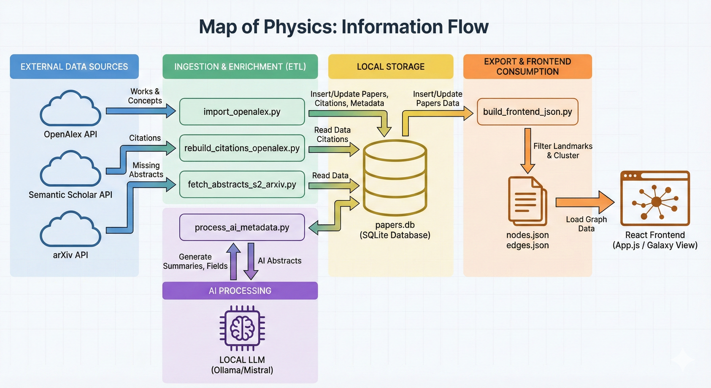
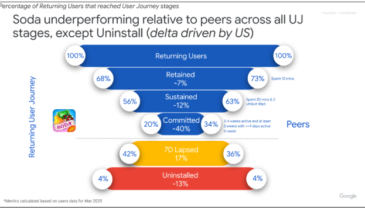
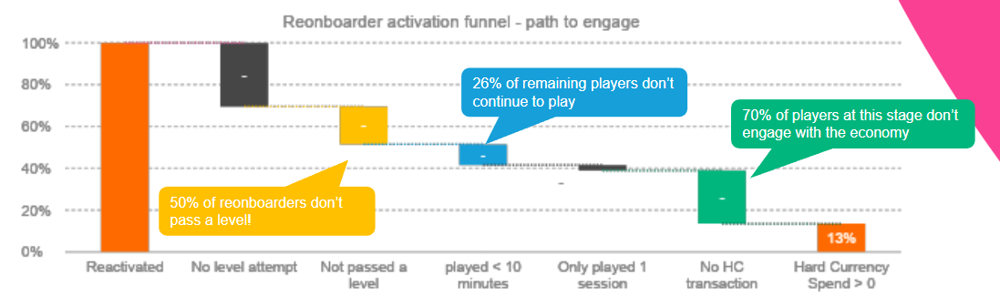

Product Manager & Data Scientist
10+ years building data-driven products and leading high-performing teams. I bridge analytics and strategy — turning complex data into decisions that drive real outcomes.
An interactive visualisation of academic papers arranged as a graph. Mapo answers one question: why do we think this is true?
Most people hold beliefs about the world without knowing what the actual evidence is. Mapo is built for people who want to go deeper — to find a topic and understand all its sources without having to dive fully into the literature.
It is an interactive 2D visualisation of academic papers arranged as a graph, designed around immersion, smoothness, and a premium feel. The design philosophy treats knowledge exploration as something that should be beautiful, not clinical.
Mapo is a framework, not just two websites. The pipeline works for any research domain. The long-term vision is a connected atlas of human knowledge — every field navigable as a graph, with AI-generated summaries making every node accessible to a non-specialist.
Explore how things are connected. What observations led to this theory? What has been tested? What does it predict?
Clusters reveal schools of thought, research frontiers, and the lineage of ideas
The pipeline generalises — physics and food science today, more to come
Visit Map of Physics or Map of Food Science. Each is a self-contained galaxy of research.
Click and drag to rotate, scroll to zoom. Papers appear as nodes — clusters represent schools of thought.
Select any paper to see its title, AI-generated summary, citation count, and connected papers.
Use the sidebar to highlight specific subfields or zoom into a cluster of interest.
Edges represent citations. Follow them to trace how an idea evolved over time.
Mapo is built on a Python ETL pipeline that ingests from the OpenAlex and arXiv APIs, enriches papers with AI-generated summaries via a local LLM (Ollama / Mistral), stores everything in SQLite, clusters the citation graph, and exports JSON for a React + Three.js frontend rendered in the browser.

Bad data viz costs decisions. Good data viz makes them. I help scale-ups cut through dashboard noise to find the signals that matter.
Remove to improve
the data-ink ratio
Every element in a chart that isn't data is noise. Most dashboards are 80% noise.
This is a funnel visualisation Google uses in their mobile app consultancy. It's produced by one of the world's best engineering organisations. Spot the problem.


Reactivation, engagement, and monetisation for mobile and SaaS scale-ups
Cutting 20-chart decks down to 5 charts that actually change decisions
Teaching product and analytics teams to think in data-ink ratios — not slide count
Book a free 30-minute call to discuss your data challenges.
Book a consultation call